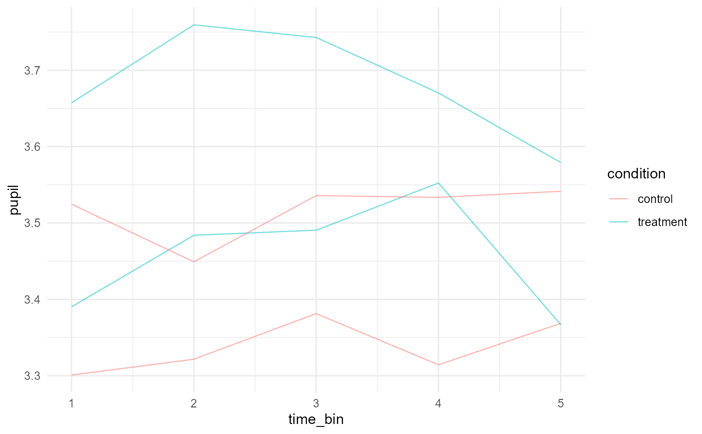

Plot a Gazepoint-style time series
Source:R/scanpath_qc_plot_extensions.R
plot_gazepoint_time_series.RdCreates a compact line plot for pupil, gaze, AOI, or other time-varying Gazepoint-derived measures. The helper is intentionally descriptive: it does not smooth, model, or infer effects unless the user has already prepared the plotted values.
Usage
plot_gazepoint_time_series(
data,
time_col,
value_col,
group_cols = NULL,
colour_col = NULL,
facet_col = NULL,
alpha = 0.55,
linewidth = 0.4,
title = NULL,
x_label = NULL,
y_label = NULL
)Arguments
- data
A data frame.
- time_col
Character name of the time column.
- value_col
Character name of the value column.
- group_cols
Optional character vector of grouping columns used to draw separate trajectories.
- colour_col
Optional character name of a column used for colour.
- facet_col
Optional character name of a column used for faceting.
- alpha
Line opacity.
- linewidth
Line width.
- title
Optional plot title.
- x_label, y_label
Optional axis labels.
Examples
x <- simulate_gazepoint_pupil_data(n_subjects = 2, n_trials = 2, n_time_bins = 5, seed = 1)
plot_gazepoint_time_series(
x,
time_col = "time_bin",
value_col = "pupil",
group_cols = c("subject", "trial"),
colour_col = "condition"
)
